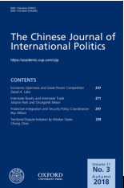

收录于合集

简介
【作者简介】 蒲晓宇， 美国内华达大学政治学系助理教授。2012年在俄亥俄州立大学取得政治学博士学位。2012-2013年度，在普林斯顿- 哈佛大学中国与世界研究项目从事博士后研究。近年来在中英文权威学术期刊发表多篇论文，包括: International Security、The Chinese Journal of International Politics、 Asian Affairs、《世界经济与政治》、《外交评论》、等刊物。蒲晓宇担任《外交评论》编委，先后为20余种国际期刊担任学术审稿人，3次被International Security评为年度优秀审稿人。
【编译】 李源
【校对】 曲雅倩、褚峰熠
【文章来源】 The Chinese Journal of International Politics Volume 10 | Issue 2 1 | June 2017, Pages 131-149
【期刊简介】 ** __**

__
The Chinese Journal of International Politics，成立于2006年，是牛津大学出版社每季度出版的学术期刊，该期刊涵盖各种主题，包括： 中国的外交政策、东亚的区域动态、军备控制和裁军军事、冲突和争端解决、全球化和国内变革等。根据2014年期刊引用报告，该期刊的影响因子为1.312。2017 年其影响因子上升为1.813。
【期刊网址】
【提纲】
摘要
中国的国际定位：定义
关于中国国际定位的争论：起源与背景
中国国际定位的争论：共识与分歧
争论解释：地位信号模式 (Status Signaling Model)
结论
【核心观点】
自08年金融危机以来，中国学者对中国的国际定位进行了激烈争论。持续的争论揭示了中国国际定位的高度不确定性。本文采用“地位信号”(status signaling)解释为什么中国学者在这场争论中持有不同立场，地位信号旨在改变或者维持相关政治参与者中特殊类型的“地位认知”(status belief)。中国必须以促进其利益的方式管理好其相互冲突的角色，同时避免造成错误认知。尤其是，中国必须平衡好决心与保证、地位与责任、国内与国际受众之间相互竞争的关系。这些相互冲突的因素塑造着中国关于其国际定位的争论。
中国的国际定位：定义
国际定位具有主观、客观与主体间的维度。 主观维度是指身份和地位叙事。在社会互动中，叙事身份(narrative identity)是形象定位与投射的基础。正如个人可能具有多重自我，一个国家也可以具有不同的国家身份叙述。客观维度是指国家所具有的物质能力，经济与军事能力构成了国家地位的物质基础。主体间维度则是指国际受众对国家定位的承认。 本文则重点关注国家定位的主观维度。
**
**
关于中国国际定位的争论：起源与背景
借用国际关系中的层次分析法，本文从三个层面讨论这场争论的起源与背景： 在国际层面 ，近年来中国的国际地位发生巨大变化，两场事件在塑造这场争论中尤其突出：2008年全球金融危机与2010年中国超过日本成为世界第二大经济体。但在一定程度上，中国的经济地位已经超出了中国政治和知识精英的预期。尽管当今中国有了更高的国际地位，但某些中国精英却没有为中国在全球社会中的突然高调做好准备； 在国家层面上 ，中国的外交政策制定变得更加复杂与分散。不同机构有时会拥护不同的对外利益与政策选择，更加复杂的决策过程为不同的声音创造了空间； 在个人层面上 ，学者的学术偏好也塑造了这场争论。
中国国际定位的争论：共识与分歧
大部分学者都同意中国具有多重身份，都希望中国在未来变得更加富有与强大。但在以下三个方面存有分歧： 中国的哪种身份应当是最突出的；中国崛起的最终目标是什么；在新时代中国的战略应当是保持低调还是争取更大成就 ，即：我是谁？我将要去哪？我将怎么做？
关于中国身份叙述的问题 ，作者认为至少五个关于中国身份的叙述在中国的国际关系话语中被广泛认可：第一，中国是一个有中国特色的社会主义国家，中国共产党是执政党，是中国体制的关键特征；第二，中国是一个发展中国家；第三，中国是一个新兴大国或崛起大国；第四，中国已经是一个公认的大国；第五，中国是东亚的地区大国。
关于中国长期目标的问题 ，中国精英有着明确的总体目标，但其最终目标不明确。中国学者对于其长期目标有着不同的看法，“中国最终应当成为一个超级大国并在国际舞台上扮演主导角色吗？”“中国的最终目标应当是取代美国成为下一个世界领袖吗？”
关于中国应采取的战略的问题 ，学者们争论：中国应当在世界舞台上扮演更加积极的角色吗？新时代的中国战略应当是继续保持低调，还是争取更大成就？
争论解释：地位信号模式 (Status Signaling Model)
作者选取“信号模型”来解释这场争论。“信号模型”指得是中国学者帮助政府检验国际受众对于政策变革的反应。与政府关系密切的学者可以帮助政策制定者向外界表达某些有争议的想法。作者在两个方面修改了信号模式：第一，关注地位信号，而非传统信号。地位信号是指信息传递机制，其目的是改变或维持相关政治行动者中的特殊类型的“地位认知”；第二，强调国内与国际受众的重要性而非单纯的外部环境，中国领导人面临着国内与国际受众共同的压力。作者利用“地位信号”来解释为何中国越来越承认它的崛起大国地位，同时强调它的发展中国家身份。
作者强调中国必须以促进其利益的方式管理好其相互冲突的角色，同时避免在众多受众中产生错误的认知与预期。尤其是， **中国必须平衡好决心与保证、地位与责任、发展中国家与发达国家 (the Global North and Global South)，国内与国际受众之间相互冲突的关系。**首先，坚定捍卫国家利益和主张的决心与和平崛起的保证之间存在不平衡。中国的崛起已经给西方及周边国家造成了不确定性与焦虑，中国崛起如何向国际社会发出清晰的和平保证信号同时坚定捍卫其国家利益，显得更为重要；第二，追求大国地位与承担不必要的责任存在相互冲突与竞争；第三，中国作为一个发展中大国，具有独特地位。在争取大国地位的同时，中国强调其发展中国家的身份以维护发展中国家的团结、提高政治影响力、努力加强其在全球治理结构中的代表性和话语权；第四，国内与国际刺激因素存在不平衡。作者认为中国对国际地位的追求越来越多地受到了国内政治与受众的推动。包括一些国家领导人在内的中国政治精英们普遍认为，中国的发展模式为西方民主提供了一种替代方式，也为其他发展中国家提供了借鉴的经验，国内政治促使中国在外交上采取更“强硬“的转变。
结论：
探讨中国的国际定位问题是十分重要的，首先这涉及到中国与现存世界秩序关系的问题；其次，这塑造着中国以何种姿态参与国际事务；最后，这影响着守成大国采用何种方法应对中国的崛起。因此，作者认为中国必须以维护其利益的方式管理好其相互冲突的角色，同时避免给国内外造成错误认知。在平衡好捍卫利益的决心与和平崛起的保证、大国地位与国际责任、国内与国际受众之间的关系的过程中，找到中国的国际定位。
点击 阅读原文 可获取全文pdf版！
**
**
更多阅读：
**【FA杂志】自由主义秩序的神话——历史偶然到传统观念的演变
**
**【外文编译·IS杂志】中美在东南亚的竞争
——权力转移还是竞争共存？
**
【外交事务】海伦·米尔纳：罗伯特·吉尔平的遗产对今天国际政治的启示
**
**